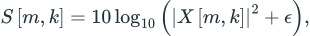

整体概括
研究对象、方法与结果边界
论文研究复合 GNSS 干扰的闭集分类：输入是同一段基带信号导出的时频图与 PSD 图，输出是九类之一；数据按 GPS L1 频段特性合成，共 405,000 个样本，作者报告总体准确率 96.99%。方法用更深的 STFT 流提取时频语义、更浅的 PSD 流提取全局能量统计，并把 SK 多分支选择、ACB 方向性卷积与 SE 融合组合起来。结论首先限定在该合成闭集上，不能直接读成真实接收机性能。
对照原文证据
Evaluations on a dataset of 405,000 samples demonstrate that SKANet achieves an overall accuracy of 96.99%, exhibiting superior robustness for compound jamming classification, particularly under low Jamming-to-Noise Ratio (JNR) regimes.The simulation environment is configured to replicate the signal characteristics of the GPS L1 frequency band ( 1575.42 MHz), ensuring the spectral behaviors of the generated jamming signals are physically representative [ 27 ] .We consider a total of nine distinct compound interference classes formed by the pairwise superposition of jamming primitives.SKANet combines the temporal localization of TFIs with the statistical stability of Power Spectral Density (PSD). Central to our design is the integration of a Multi-Branch Selective Kernel (SK) mechanism [ 28 ] with Asymmetric Convolution Blocks (ACBs) [ 26 ] .首要数字的汇总口径
最重要的数字 96.99% 是 -20 至 15 dB 的汇总 OA，作者明确把 -25 dB 排除在汇总之外；相对同表第二名 TFPENet 的 94.58% 高 2.41 个百分点。代价是 10.63M 参数与 5.38 ms 表内推理时间，对比 TFPENet 的 11.57M 与 4.47 ms：参数略少但单样本时间更长，不能概括为全面更高效。
对照原文证据
the statistical metrics reported, including Overall Accuracy and F1 Score, represent aggregate performance averaged over the JNR range of -20 dB to 15 dB. We explicitly exclude the extreme scenario of -25 dB from the aggregate metrics.SKANet achieves a superior Overall Accuracy of 96.99% and establishes a lead of 2.41% over the second-best method TFPENet.TFPENet [ 10 ] 94.58 11.57 4.47 SKANet 96.99 10.63 5.38Research gap
复合叠加与固定感受野的双重困难
作者把研究缺口归为两点：复合干扰在时频域重叠后，宽带噪声会遮住窄带脚印，脉冲又会与扫频交错；而常见 CNN/ViT 使用固定感受野，难以同时适配瞬态与连续成分。这个缺口陈述是作者动机归纳，不是本站独立完成的领域查新，也没有给出系统性的文献计量证据。
对照原文证据
Here, multiple diverse signal sources overlap in the time-frequency domain [ 41 ] . For instance, a wide-band noise signal from a malfunctioning industrial device may mask the spectral footprint of a co-existing narrow-band signal, or high-power pulses from radar systems may interleave with frequency-sweeping chirps.Existing Deep Learning (DL) approaches, primarily relying on standard Convolutional Neural Networks (CNNs) [ 19 ] or Vision Transformers (ViTs) [ 36 ] with fixed receptive fields, struggle to resolve these conflicting scales simultaneously [ 6 ] .本文回应的位置
已有 SK 机制在遥感与调制识别中显示出潜力，但作者称其在 GNSS 抗干扰中仍有限；ACSNet 与 TFPENet 虽有双流或 ACB 元素，作者仍把它们归为固定特征提取器。SKANet 的回应是把动态感受野与 TFI/PSD 融合放在同一框架里。这里“固定”与“动态”的二分是作者的架构对比，不应读成已证明前者在所有数据上都失败。
对照原文证据
This concept has demonstrated potential in remote sensing [ 29 ] and modulation recognition [ 30 ] but remains limited in GNSS anti-jamming.Unlike ACSNet [ 25 ] or TFPENet [ 27 ] which employ fixed feature extractors, SKANet combines multi-modal fusion with adaptive receptive fields.算法主线

原图由 arXiv 加载；若未显示，可打开下方原图链接。
跟着原图读
- 先看左列
左列是五个基元：STJ、MTJ、PBNJ、Pulse、LFM，框内给出英文全称。它们构成本文的数据生成词典，不是分类器的输出类别。
- 再看右列与连线
右列是九个复合类，每个框名由两个基元相加；细线从基元连到包含它的组合，可以逐条核对组合成分。图中没有三成分框，也没有无干扰或未知类框；STJ+MTJ 未出现，说明九类不是五选二的全部组合。
- 最后回到任务
这张图服务于数据集生成与九类分类任务：它定义闭集类别，而不是展示分类性能。读图时应把“有哪些类”与“这些类分得多准”分开。
不能从图中推出三成分组合、无干扰/未知类的处理，或任何分类准确率；连线只表示构成关系，不表示功率占比、重叠程度或因果贡献。图中没有 STJ+MTJ，提示九类是作者选定的子集而非全部两两组合。

原图由 arXiv 加载；若未显示，可打开下方原图链接。
跟着原图读
- 先看两路输入与深度
上方输入是时频图，下方是 PSD 曲线；STFT 流有四个 SK-ACB 阶段，PSD 流只有两个 ACB 阶段。这个不对称正是作者所说的“深语义流 + 轻统计流”，读图时先确认两路不是同构网络。
- 再看 SK-ACB 与 ACB 的差别
只有 STFT 流标 SK-ACB，PSD 流标 ACB；说明多分支动态选择主要加在时频流，PSD 流保留不对称卷积但图中不画多分支。不要把 PSD 流的两个 ACB 误读成两个 SK-ACB。
- 最后看融合与分类头
两路 GAP 后拼接，SE 用 GAP→FC→Sigmoid 生成通道权重并逐元素相乘；之后 FC→BN→激活→Dropout→FC 输出九类。图中 SE 只画了一个 FC，正文却说 bottleneck、reduction ratio 16 以及 ReLU+Sigmoid，说明这是简化示意，不能按图标数层数。
不能从箭头数量推断参数量、FLOPs 或 5.38 ms 延迟，也不能确认每层通道数、卷积核大小与激活函数细节；图中 S 形图标与正文的 Swish 表述需要回原文核对。输入示意图只说明“有水平线/斜线/窄峰”，不能当作某类干扰的定量证据。
闭集九类的监督分类形式
问题被形式化为闭集监督分类：类别数 K 由系统模型预设，本文为九类；每个样本是同一段信号的 TFI 与 PSD 两个表示，标签是九类之一。闭集意味着模型只在已知类别中取最大概率，来源未描述“无干扰”“未知干扰”或三成分混合的拒识分支。阅读其高 OA 时，应把它限定在这九个预设类别内。
对照原文证据
We formulate the identification of compound GNSS jamming signals as a supervised classification problem under a closed-set assumption.Specifically, the total number of interference classes, denoted as K , is determined by the specific jamming combinations considered in the system model (i.e., K=9 in this study, corresponding to the types listed in Table II ).The framework processes the signal into two complementary representations: the TFI, denoted as \mathbf{X}_{\text{TFI}}\in\mathbb{R}^{H\times W\times C} , and the PSD map, denoted as \mathbf{X}_{\text{PSD}}\in\mathbb{R}^{H\times W\times C} .ACB：方向性核与推理期等价融合
ACB 用 3×3、1×3、3×1 三个并行卷积核近似标准 3×3 卷积，训练时保留三路，推理时把 BN 折进卷积并零填充成等价核相加，作者称因此不增加推理开销。其动机是时频图有方向性：水平线状的单音适合 1×3，垂直的脉冲/宽带结构适合 3×1。要注意“零开销”是相对标准 3×3 的等价融合而言，不是整个网络没有计算成本。
对照原文证据
For a given input tensor \mathbf{X} , the ACB approximates a standard 3\times 3 convolution by aggregating the outputs of three parallel kernels.Exploiting the additivity of convolution, these kernels are fused into a single equivalent kernel \tilde{\mathbf{K}} during the inference phase to ensure zero computational overhead:For instance, STJ manifests as continuous horizontal lines characterized by temporal consistency, which are effectively captured by 1\times 3 kernels. Conversely, pulse jamming and wideband bursts appear as vertical structures representing spectral spread, which resonate with 3\times 1 kernels.SK：多膨胀率分支的加权选择
SK 分支才是“动态感受野”的主要来源：同一输入经三个 ACB 分支、膨胀率分别为 1、2、4，得到局部到全局的特征金字塔；三路逐元素相加后经 GAP、FC 与 Softmax 生成 a、b、c 三个权重，且三者之和为 1，再对三路特征加权求和。ACB 负责方向性核融合，SK 负责在多个膨胀尺度间选择；两者在同一个 SK-ACB 块里串联，不能把“核融合”和“尺度选择”混为一步。
对照原文证据
We implement a Split-Fuse-Select mechanism with M=3 branches, as illustrated in Fig. 6 .via parallel ACBs with distinct dilation rates D=\{1,2,4\} , constructing a pyramid of receptive fields that covers local textures to global contexts.Finally, in the Select phase, a compact descriptor \mathbf{z} is generated via a Fully Connected (FC) layer to compute adaptive attention weights \mathbf{a} , \mathbf{b} and \mathbf{c} through a Softmax operator.where \mathbf{A} , \mathbf{B} and \mathbf{C} are learnable weight matrices, and the weights satisfy a_{c}+b_{c}+c_{c}=1 .非对称双流、SE 融合与分类头
两路并不对称：STFT 流有四个级联 SK-ACB 阶段，通道从 32 扩到 512；PSD 流只有两个处理阶段，通道上限 128，作者称为轻量统计流。两路 GAP 后得到 512 维与 128 维向量，拼接后经 reduction ratio 为 16 的 SE 重标定，再进入 256 维、BN、Swish、dropout 0.6 的分类头。PSD 更浅是设计选择，不是消融已证明“越浅越好”。
对照原文证据
The STFT Stream serves as the primary deep feature extractor, initiating with a stem layer followed by four cascaded stages of SK-ACB blocks ( L_{stft}=4 ). We employ a progressive channel expansion strategy ( 32\to 512 ) to abstract high-level semantic representations.In contrast, the PSD Stream is designed for computational efficiency; it utilizes a shallower architecture with only two processing stages and a channel capacity capped at 128.The feature vectors \mathbf{F}_{STFT}\in\mathbb{R}^{512} and \mathbf{F}_{PSD}\in\mathbb{R}^{128} obtained after GAP are first concatenated into a unified representation \mathbf{F}_{cat} . An SE block is then applied to adaptively recalibrate channel importance by learning a weight vector \mathbf{w} through a bottleneck structure with a reduction ratio of r=16 .The classifier comprises a linear projection to 256 latent dimensions, Batch Normalization, Swish activation, and a Dropout layer ( p=0.6 ) before the final probability mapping.关键公式
双成分线性叠加：先看生成模型
叠加式把复合干扰写成两个单位功率基元的线性组合：一个幅度权重 α 控制第二分量相对第一分量的强度，归一化因子 γ 约束总功率。它对应“两个、线性、基带”的生成模型；α 是幅度权重，功率比要按平方换算，实验中 PR 在 -3 至 3 dB 内均匀抽取。该式不描述三成分、非线性接收机失真或空口信道叠加，也不能从它推出分类器对未知组合的泛化。
对照原文证据
This work defines compound interference as the linear superposition of two distinct single jamming primitives.Let j_{1}(t) and j_{2}(t) denote two independent, unit-power jamming components selected from the primitive set defined above [ 27 , 41 ] .where \gamma is a normalization factor constraining the total power, and \alpha is a weighting coefficient that determines the relative intensity between the two components.the PR, as formulated in ( 9 ), is randomized uniformly within the range of [-3,3] dB for each sample.对数时频幅值：压缩动态范围
对数时频幅值先把 STFT 复系数的模平方取对数，再加一个小常数 ε 防止 log 零；得到的是压缩动态范围后的 dB 标度图，便于同时看见强干扰与弱结构。来源只说明 ε 是防数值不稳的小常数，没有给具体取值，也没有说明 dB 的参考基准；随后图像被双三次插值到 224×224。不能把该图的像素灰度当作未经标定的绝对功率。
对照原文证据
For neural network inference, the phase information is typically discarded in favor of the magnitude spectrogram.To compress the high dynamic range of jamming signals (where P_{J}\gg P_{N} ) and enhance the visibility of weak interference structures, we apply a logarithmic transformation to the magnitude squared of the STFT coefficients defined as follows:where \epsilon is a small constant to prevent numerical instability.The resulting magnitude spectrogram is logarithmically scaled to dB and resized to 224\times 224 pixels using bicubic interpolation.训练目标与报告指标：CE 与 OA
交叉熵对每个样本只取真实类别的预测概率的负对数，再在批量上平均；它适合单标签闭集九类，但不会直接惩罚把未知类错分到已知类。OA 则是正确预测数除以测试样本数：表 III 的 96.99% 是 -20 至 15 dB 的平均并排除 -25 dB，不是单点 JNR 准确率，也不反映各类召回是否均衡。
对照原文证据
To optimize \Theta , we employ the Cross-Entropy (CE) loss function to quantify the divergence between the predicted probability distribution \hat{\mathbf{y}} and the true label y .OA serves as the primary metric, quantifying the ratio of correctly classified samples to the total number of samples. Let N be the total number of test samples, and N_{correct} be the number of correct predictions.the statistical metrics reported, including Overall Accuracy and F1 Score, represent aggregate performance averaged over the JNR range of -20 dB to 15 dB. We explicitly exclude the extreme scenario of -25 dB from the aggregate metrics.SKANet achieves a superior Overall Accuracy of 96.99% and establishes a lead of 2.41% over the second-best method TFPENet.等价核融合：训练三分支，推理一核
等价核融合式把 3×3、1×3、3×1 三个卷积核在推理阶段合成一个 3×3 核：先各自折入 BN 参数，再把两个非对称核零填充到 3×3，最后逐元素相加。这样部署时只跑一个标准卷积，作者称相对原 3×3 不增加推理开销；但训练仍保留三分支，且这里的“核融合”与 SK 的多膨胀率分支选择是两件事。
对照原文证据
the ACB approximates a standard 3\times 3 convolution by aggregating the outputs of three parallel kernels.these kernels are fused into a single equivalent kernel \tilde{\mathbf{K}} during the inference phase to ensure zero computational overheadSpecifically, it implies that the asymmetric kernels ( \mathbf{K}_{1\times 3} and \mathbf{K}_{3\times 1} ) are first fused with their corresponding batch normalization parameters and then zero-padded to the 3\times 3 spatial dimension to align with \mathbf{K}_{3\times 3} before aggregation.双成分复合干扰的线性叠加
把两个单位功率基元按幅度权重 α 相加，再用 γ 归一化总功率；α 越大，第二分量越强。
符号与实现提醒
- j_mix(t)
- 复合基带干扰信号
- j_1(t), j_2(t)
- 两个单位功率的基元干扰分量
- α
- 第二分量相对第一分量的幅度权重（无量纲）
- γ
- 约束总功率的归一化因子（无量纲）
只覆盖两个成分的线性叠加；不包含三成分、信道卷积、接收机非线性或空口传播。α 是幅度权重，功率比需按平方换算为 dB；实验把 PR 限制在 -3 至 3 dB，不能外推到更强的不平衡。
对数时频幅值压缩

对 STFT 复系数的模平方取 10log10 并加 ε，得到动态范围压缩后的时频图；相位被丢弃。
符号与实现提醒
- S[m,k]
- 第 m 帧、第 k 频点的对数幅度时频图
- X[m,k]
- STFT 复系数
- ε
- 防止 log 零的小常数
来源未给 ε 的具体数值与 dB 参考基准，不能把像素值解释为绝对功率；10log10 作用于模平方，若改用 20log10 作用于模长，数值等价但写法不同。该图随后被插值到 224×224，插值会改变纹理细节。
闭集九类的交叉熵目标
对每个样本取真实类别预测概率的负对数，再对批量平均；指示函数只保留正确类别的项。
符号与实现提醒
- L(Θ)
- 训练损失
- N
- 批量或样本数
- K
- 类别数，本文为九类
- y(i)
- 第 i 个样本的真实标签
- ŷ(i)
- 第 i 个样本的预测概率向量
- [ŷ(i)]_k
- 第 k 类的预测概率
- I(·)
- 指示函数
这是单标签闭集目标，不包含拒识、未知类或类别权重；来源使用批大小 64，未说明标签平滑。若部署中类别代价不对称，需改写损失或加后处理。
总体准确率的定义与汇总边界
OA 等于正确预测数除以测试样本数再乘 100%，衡量整体命中比例。
符号与实现提醒
- OA
- 总体准确率（%）
- N
- 测试样本总数
- N_correct
- 正确预测数
表 III 的 OA 是 -20 至 15 dB 的平均并排除 -25 dB，且为 10 次 Monte Carlo 运行的均值；它不是单点 JNR 准确率，也不反映各类召回是否均衡。类别不平衡时 OA 可能掩盖少数类错误。
ACB 推理阶段的等价核融合
把 3×3、1×3、3×1 三个卷积核分别折入 BN、零填充到同一空间尺寸后逐元素相加，得到一个等价的 3×3 核。
符号与实现提醒
- K̃
- 融合后的等价 3×3 卷积核
- K_3×3
- 标准方形卷积核
- K_1×3
- 水平不对称卷积核
- K_3×1
- 垂直不对称卷积核
- ⊕
- 零填充后的逐元素求和
融合只在推理阶段成立；训练仍保留三分支。它优化的是单个 ACB 相对标准 3×3 的推理开销，不等于整个 SKANet 没有额外计算。不要把这里的核相加与 SK 的多膨胀率分支加权选择混为一谈。
实验怎么做
合成数据：GPS L1、20 MHz、1 ms
数据由基带仿真生成，目标是复现 GPS L1 频段特性：采样率 20 MHz、观测时长 1 ms、离散点数 20,000；JNR 从 -25 dB 扫到 15 dB，每 1 dB 一档，背景为复高斯白噪声。九类双成分组合在每档每类生成 1,000 个实现，作者报告总量 405,000。这里必须保留“仿真、基带、GPS L1”三个限定，不能写成外场采集。
对照原文证据
To evaluate the proposed method, we constructed a synthetic dataset simulating compound GNSS interference scenarios.The baseband simulation is conducted with a sampling frequency of F_{s}=20 MHz, covering the typical bandwidth of civil GNSS receivers [ 6 , 18 ] . The observation duration is set to T=1 ms [ 19 , 25 ] , corresponding to one C/A code period, yielding a discrete sequence length of N=20,000 points.The final dataset comprises 405,000 samples. This includes nine compound jamming classes, with 1,000 independent Monte Carlo realizations generated for each class at each of the JNR levels ( -25 dB to 15 dB).两路输入：TFI 与 PSD 都做成 224×224 图像
TFI 走 STFT：Hann 窗，连续信号窗长 128、短突发窗长 64，重叠约 92%，4096 点 FFT，幅度取 dB 后双三次插值到 224×224。PSD 走 Welch：Hamming 窗长 2048、50% 重叠、4096 点 FFT，然后把谱曲线画成不带坐标轴与网格的 224×224 图像。也就是说，网络看到的 PSD 是“曲线的渲染图”，不是原始功率向量。
对照原文证据
The TFI is generated via STFT. To balance time and frequency resolution, we employ a Hann window. The window length N_{win} is adaptively set to 128 for continuous signals and 64 for short-burst signals to capture transient details. The overlap is configured at approximately 92\% , and a 4096-point FFT is applied.The resulting magnitude spectrogram is logarithmically scaled to dB and resized to 224\times 224 pixels using bicubic interpolation.The frequency-domain input is generated using Welch’s power spectral density estimate. We utilize a Hamming window of length 2048 with 50\% overlap and a 4096-point FFT. This configuration provides a smooth and low-variance spectral estimate. The resulting PSD curve is plotted without axes or grid lines and captured as a 224\times 224 pixel image, strictly containing the spectral trace to minimize visual noise.训练、基线与报告口径
训练用 100 个 epoch、批大小 64，数据按 0.8:0.1:0.1 划分，报告值为 10 次独立 Monte Carlo 运行的平均；基线包括 ViT-B-16、ResNet18、EfficientNetB0、ShuffleNetV2 与 TFPENet。原文写的是 “Stochastic Gradient Descent (SGD) with the Adam optimizer”，术语前后不一致，本站按原文记录，不替作者改写，也不把该配置当作已复现。
对照原文证据
The network was optimized using Stochastic Gradient Descent (SGD) with the Adam optimizer ( \beta_{1}=0.9 , \beta_{2}=0.999 , and \epsilon=10^{-8} ). To facilitate convergence, the learning rate was initialized at \eta=10^{-3} and adjusted dynamically via a cosine annealing scheduler over 100 training epochs. The model was trained with a batch size of 64, using CE loss to guide gradient updates.The dataset was partitioned into training, validation, and testing sets following an 0.8:0.1:0.1 ratio. All reported results are averaged over 10 independent Monte Carlo runs.The benchmark models include the Transformer architecture ViT-B-16 and several Convolutional Neural Network architectures including ResNet18, EfficientNetB0, ShuffleNetV2, and the domain-specific TFPENet.提升与证据
同表比较：更高 OA，但延迟更长
同表比较中，SKANet 的 96.99% 比 TFPENet 的 94.58% 高 2.41 个百分点；参数量 10.63M 对 11.57M，表内单样本时间 5.38 ms 对 4.47 ms。也就是说，它在这一合成集上以更少参数换来更高 OA，但延迟反而更长。表中数字是 -20 至 15 dB 的汇总，不能读成每个 JNR 点都领先，也不能把参数更少解释为计算量必然更低。
对照原文证据
the statistical metrics reported, including Overall Accuracy and F1 Score, represent aggregate performance averaged over the JNR range of -20 dB to 15 dB. We explicitly exclude the extreme scenario of -25 dB from the aggregate metrics.SKANet achieves a superior Overall Accuracy of 96.99% and establishes a lead of 2.41% over the second-best method TFPENet.TFPENet [ 10 ] 94.58 11.57 4.47 SKANet 96.99 10.63 5.38JNR 曲线：优势集中在低 JNR 段
准确率-JNR 曲线显示，-20 dB 时作者报告 SKANet 仍高于 75%，而 ResNet18 与 ShuffleNetV2 分别低于 45% 与 40%；到 -14 dB，SKANet 已超过 99%，在 -10 dB 以上保持 100%。这些读数说明相对优势主要集中在噪声压过干扰特征的区间。图里虽有 -25 dB 点，表 III 的汇总明确排除该点；不能把 -25 dB 的视觉高度当作汇总 OA 的组成部分。
对照原文证据
We explicitly exclude the extreme scenario of -25 dB from the aggregate metrics.At the challenging level of -20 dB, SKANet maintains a recognition accuracy exceeding 75%. In contrast, standard convolutional baselines such as ResNet18 and ShuffleNetV2 struggle significantly with accuracies falling below 45% and 40% respectively.SKANet demonstrates the fastest convergence rate and reaches near-perfect accuracy exceeding 99% at -14 dB.In the high-SNR regime greater than -10 dB, the performance of most models stabilizes. SKANet maintains a consistent 100% accuracy which confirms that the model does not suffer from overfitting or degradation when signal conditions improve.类别级 F1：平均与代表类
按类别看，平均 F1 为 96.48%，比 TFPENet 高约 0.9 个百分点；MTJ_Pulse 的 F1 为 97.76%，比 TFPENet 高 0.81 个百分点，STJ_PBNJ 为 96.46%，STJ_Pulse 被描述为接近完美。作者把这些归因于频域流抓单音、时域流抓脉冲的分工。类别级数字仍是同一合成测试集、同一 JNR 汇总口径，不能据此推断真实信号中这些组合的可分性。
对照原文证据
SKANet achieves the highest average F1 score of 96.48% and outperforms the runner-up method TFPENet by approximately 0.9%.For the MTJ_Pulse category which combines discrete frequency tones with transient time-domain bursts, SKANet achieves a superior F1 score of 97.76% and surpasses TFPENet by 0.81%. Similarly, SKANet leads with an F1 score of 96.46% for the STJ_PBNJ category.Specifically, the STJ_Pulse class is identified with near-perfect accuracy.
原图由 arXiv 加载；若未显示，可打开下方原图链接。
跟着原图读
- 先看坐标与图例
纵轴是 0–1 的比例而不是百分数，横轴含 −25 dB；先按标记区分七条曲线，尤其不要把黄色 TFPENet 与蓝色 SKANet 混淆。
- 再看低 JNR 段
−25 dB 处所有曲线都远未饱和；−20 dB 处正文说 SKANet 高于 75%，ResNet18 与 ShuffleNetV2 分别低于 45% 与 40%；SKANet 在 −14 dB 已超过 99%，在 −10 dB 以上保持 100%。这些读数来自正文与曲线，不应从像素高度再外推小数位。
- 最后看高 JNR 与汇总
−10 dB 以上多数曲线饱和到 1.0。图确实包含 −25 dB 点，但表 III 的 OA 汇总明确排除 −25 dB；读图时必须把“图上的极端点”和“表里的汇总值”分开。
不能从曲线像素高度读出未标注的精确准确率，也不能把 −25 dB 的点当作 96.99% 的组成部分；图没有给出置信区间、测试样本数或每类曲线，不能据此判断类别间差异是否显著。曲线是合成测试集结果，不是真实接收机外场性能。另按正文的九类、每档 1,000 个与 −25 至 15 dB 的 1 dB 步进（41 档）计算，样本数为 9×41×1,000=369,000，与正文所报 405,000 不闭合；来源未解释差额，本站保留为待核。
局限与追问
合成闭集：结论不能外推到真实空口
所有报告都建立在合成数据上：作者明确说是构造的合成数据集（constructed a synthetic dataset），按 GPS L1 频段特性生成，而不是用真实接收机采集空中信号。任务又是闭集九类，只含两个基元的特定组合；来源没有无干扰类、未知类或三成分组合。因此不能把 96.99% 外推为真实电磁环境、开集检测或三成分混合的分类性能。
对照原文证据
The simulation environment is configured to replicate the signal characteristics of the GPS L1 frequency band ( 1575.42 MHz), ensuring the spectral behaviors of the generated jamming signals are physically representative [ 27 ] .as a supervised classification problem under a closed-set assumptionWe consider a total of nine distinct compound interference classes formed by the pairwise superposition of jamming primitives.SKANet achieves a superior Overall Accuracy of 96.99% and establishes a lead of 2.41% over the second-best method TFPENet.划分与计数口径：泛化声明缺少分组信息
来源只说明按 0.8:0.1:0.1 划分、对 10 次运行取平均，并说每类每 JNR 档生成 1,000 个实现；没有说明划分是否按参数实现、干扰源或场景整组隔离，因此不能宣称跨站点、跨接收机或跨采集日泛化，也不能断言已发生泄漏。另按九类、每档 1,000 个与 -25 至 15 dB 每 1 dB 一档相乘，与 405,000 的总量不能直接闭合，来源未解释计数口径。
对照原文证据
The dataset was partitioned into training, validation, and testing sets following an 0.8:0.1:0.1 ratio. All reported results are averaged over 10 independent Monte Carlo runs.The final dataset comprises 405,000 samples. This includes nine compound jamming classes, with 1,000 independent Monte Carlo realizations generated for each class at each of the JNR levels ( -25 dB to 15 dB).the JNR is systematically swept from -25 dB to 15 dB in 1 dB increments.消融：同分布上的相对贡献
消融给出三个退化点：去掉 SK-ACB 为 93.45%，去掉 PSD 流为 94.82%，去掉 SE 融合为 96.15%，完整模型 96.99%；其中 SK-ACB 的移除带来 3.54 个百分点的最大降幅。这支持各模块在同一合成分布上的相对贡献，但不证明它们在真实干扰、不同接收机或未知组合上同样必要。消融是受控替换，不是因果机制的直接观测。
对照原文证据
w/o SK-ACB ✓ ✓ \times ✓ 93.45 w/o PSD Stream ✓ \times ✓ N/A 94.82 w/o SE Fusion ✓ ✓ ✓ \times 96.15 SKANet ✓ ✓ ✓ ✓ 96.99the replacement of the SK-ACB module with standard convolutions leads to a substantial accuracy drop of 3.54%the exclusion of the PSD stream (w/o PSD Stream) results in an accuracy decline to 94.82%成本与复现入口仍未知
成本与复现口径仍有空白：96.99% 的汇总排除 -25 dB，表内 5.38 ms 的推理时间来自工作站环境，来源未说明它是否包含 STFT、Welch、图像缩放与数据传输；作者称其满足实时认知无线电，但这是作者判断，不是端到端业务实测。已读取来源也未给出数据集、代码或补充材料链接，数据与代码的复现入口及其许可记为 unknown。
对照原文证据
We explicitly exclude the extreme scenario of -25 dB from the aggregate metrics.TFPENet [ 10 ] 94.58 11.57 4.47 SKANet 96.99 10.63 5.38Experiments utilized a workstation equipped with an Intel Core i9-12900KF CPU (@ 3.20 GHz) and an NVIDIA GeForce RTX 5060 Ti GPU (16 GB VRAM).this latency remains well within acceptable bounds for real-time CR applications and validates the practical viability of the proposed architecture.连接你的研究
先做分组隔离的真实数据验证
建议先在真实接收机上做分组隔离验证：至少两台接收机、两个地点、连续多日采集 GPS L1 基带 IQ，按采集日、设备与地点整组划分训练和测试，注入已知 JNR 与 PR 的双成分干扰，并保留无干扰与未参与训练的三成分混合作为开集测试。交付指标包括闭集 OA/F1 及其 bootstrap 置信区间、-25 至 -10 dB 的分档召回、开集 AUROC 与误报率；与 TFPENet 在同一预处理下对比。这是待执行方案，不是本文结果。
把延迟与拒识一起补测
第二个可执行实验是补齐部署口径：在目标平台上以 batch 1 测量端到端延迟，分别记录 STFT、Welch、224×224 缩放、前向与后处理的 p50/p95 时间及峰值内存，并注明是否含 CPU-GPU 传输；同时测试 IQ 不平衡、DC 偏置、AGC 与 JNR 标定误差下的性能下降。若再加入无干扰/未知类，应报告已知类 OA、未知类 AUROC、开集 F1 与误拒率。交付“误差来源—延迟—准确率”表，才能判断实时可行是否成立。
来源与边界
原图来自固定版本的 arXiv 官方图源，作者及图注已保留；外部嵌入不自动授予转载权。本站不镜像作者图片、PDF 或全文，另行转载须核对许可。外部原图受读者网络条件影响；图后解说由 AI 生成，仍需回原文核验。 arXiv v1 使用 arXiv 非独占分发许可（non-exclusive distribution），不是 CC BY；本站只外链官方图源逐图评述，不镜像作者图片、PDF 或全文。
对照原始英文摘要
收录历史：2026-10-20
原文许可：查看本版本许可 ↗；外部嵌入不等于任意转载授权。